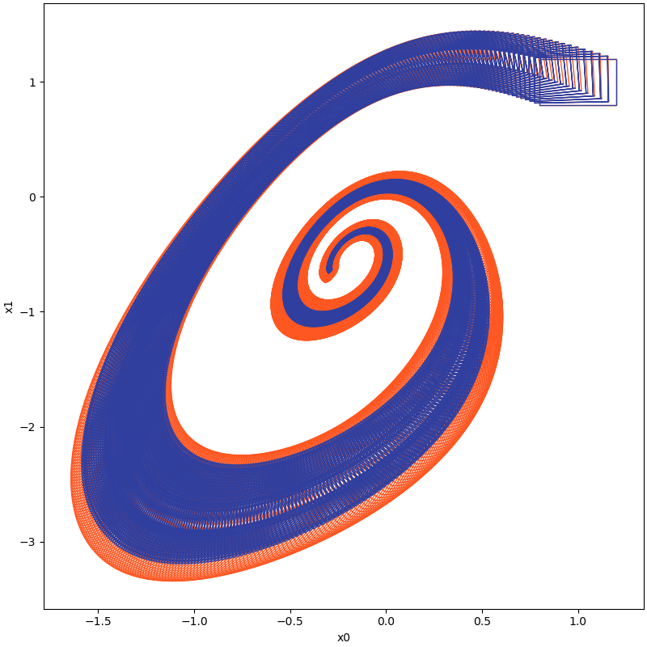

My ultimate vision is to enhance the autonomy of machines to reliably assist and benefit human society. My research goal is developing efficient autonomous control policies to function in safety-critical settings with formal guarantees.
I conduct research at the intersection of formal methods and control theory. Through investigating in constructing a unified framework that integrates high-level planning with low-level controls, my research is dedicated to offering universally applicable techniques to improve autonomous agents' stability, safety, and robustness in a variety of applications, including autonomous driving and robotics.
Research
2023
2019
-
Discernible image mosaic with edge-aware adaptive tiles
Computational Visual Media 5 (2019) .[pdf]
Project
-
Set-boundary based Reachability Analysis Toolbox in Python. Reachability analysis, which involves computing reachable state sets, plays a fundamental role in the temporal verification of nonlinear systems. Overly pessimistic over-approximations, however, render many temporal properties unverifiable in practice. This pessimism mainly arises due to the wrapping effect, which is the propagation and accumulation of the over-approximation error through the iterative computation in the construction of reachable sets. As the extent of the wrapping effect correlates strongly with the volume of the initial set, techniques that partition the initial state space and independently compute reachable sets of those partitions are often used to reduce the wrapping effect, especially for large initial sets or/and large time horizons. Such partitioning may, however, induce extensive demand on computation time and memory, often rendering the existing reachability analysis techniques not suitable for complex real-world applications. Not being forced to explore the full, e.g. exponential in the dimensionality, number of partitions could help such procedures tremendously. This is the theme of this tool, which implements the so-called 'set-boundary based method' that explores means of computing the full reachable state space based on state-exploratory analysis of just a small sub-volume of the initial state set, namely a set enclosing its boundary. 


Education
|
Shenzhen University
Master of Science in Engineering, Computer Technology Sep. 2017 — Jun. 2020 Supervisor: Hui Huang |
|
|
Harbin Engineering University
Bachelor of Engineering, Thermal Energy & Power Engineering Aug. 2011 — Jul. 2015 |
Experience
|
State Key Lab of Computer Science, ISCAS
Research intern Feb. 2022 — Mar. 2023 Supervisor: Bai Xue |
|
State Key Lab of CAD&CG, Zhejiang University
Research Assistant Aug. 2021 — Jan. 2022 Supervisor: Youyi Zheng |
|
Visual Computing Research Center, Shenzhen University
Research Assistant Jun. 2020 — Jul. 2021 Supervisor: Hui Huang |